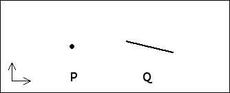
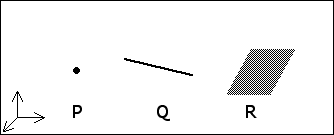

| The codimension of a set is the dimension of the complementary set. Consequently, the codimension depends on both the dimension of the set and the dimension of the space in which the set is embedded. |
|  |
| If P is a point in the plane, its codimension is |
| If Q is a line in the plane, its codimension is |
|  |
| If P is a point in space, its codimension is |
| If Q is a line in space, its codimension is |
| If R is a plane in space, its codimension is |
Return to the intersection of sets.